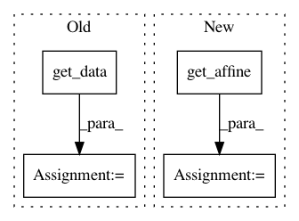

b28f80346270231ff2ef253af7ef4c5cd37f0916,plot_localizer_mass_univariate.py,,,#,26
Before Change
pvals_bonferroni[np.isnan(pvals_bonferroni)] = 1
pvals_bonferroni[pvals_bonferroni > 1] = 1
neg_log_pvals_bonferroni = -np.log10(pvals_bonferroni)
neg_log_pvals_bonferroni_unmasked = nifti_masker.inverse_transform(
neg_log_pvals_bonferroni).get_data()
////// Visualization //////////////////////////////////////////////////////////////////////////////////////////////////////////////////////////
import matplotlib.pyplot as plt
from mpl_toolkits.axes_grid1 import ImageGrid
// Use the structural image of one subject as a background image
resampled_anat = resample_img(
dataset_files.anat[0],
target_affine=nibabel.load(dataset_files.cmaps[0]).get_affine(),
target_shape=neg_log_pvals_bonferroni_unmasked.shape)
structural_data = resampled_anat.get_data()
// Various plotting parameters
picked_slice = 35 // plotted slice
vmin = -np.log10(0.1) // 10% corrected
After Change
target_affine=structural_img.get_affine(),
target_shape=structural_img.shape,
interpolation="nearest")
neg_log_pvals_bonferroni_resampled = resample_img(
neg_log_pvals_bonferroni_unmasked,
target_affine=structural_img.get_affine(),
target_shape=structural_img.shape,
interpolation="nearest")
// Various plotting parameters
picked_slice = 110 // plotted slice
vmin = -np.log10(0.1) // 10% corrected
In pattern: SUPERPATTERN
Frequency: 3
Non-data size: 4
Instances
Project Name: nilearn/nilearn
Commit Name: b28f80346270231ff2ef253af7ef4c5cd37f0916
Time: 2014-03-31
Author: virgile.fritsch@gmail.com
File Name: plot_localizer_mass_univariate.py
Class Name:
Method Name:
Project Name: nilearn/nilearn
Commit Name: dc30d1f385bb6fc231880605e7b35afd56d64c6d
Time: 2013-05-27
Author: philippe.gervais@inria.fr
File Name: nisl/io/nifti_region.py
Class Name: NiftiLabelsMasker
Method Name: transform
Project Name: nilearn/nilearn
Commit Name: 530e3ca9148a36982c110007c081a571eff660e1
Time: 2013-05-27
Author: philippe.gervais@inria.fr
File Name: nisl/io/nifti_region.py
Class Name: NiftiMapsMasker
Method Name: transform